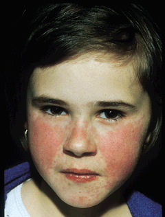

Clinical and diagnostic features
The first phase is characterized by viremia that develops approximately 6 days after intranasal inoculation of B19 into susceptible individuals who lack serum antibodies to the virus. The viremia lasts about 1 week; its clearance is correlated with the development of IgM antibodies to B19, which remain detectable for up to a few months. IgG antibodies develop several days later and persist indefinitely. Nonspecific systemic symptoms lasting 2 or 3 days occur early during the viremic phase; these symptoms include headache, malaise, myalgia, fever, chills, and pruritus and are accompanied by reticulocytopenia and excretion of the virus from the respiratory tract. Several days after the onset of symptoms, a clinically insignificant decline in hemoglobin concentration is noted; the decreased level is maintained for 7 to 10 days, during which time examination of bone marrow samples reveals a marked depletion of erythroid precursor cells. Transient mild lymphopenia, neutropenia, and a drop in platelet count also may be found. A second phase of illness begins around 17 or 18 days after virus inoculation (after the clearance of viremia, the cessation of viral shedding in throat secretions, and the resolution of reticulocytopenia). This illness mimics erythema infectiosum in adults, with 2 or 3 days of fine maculopapular rash accompanied by arthralgias and arthritis that last another 1 or 2 days. This phase occurs in the presence of rising serum titers of antibody to B19.

Erythema infectiosum is the most common manifestation of B19 infection and occurs predominantly in children. This entity is also called fifth disease because it was classified in the late nineteenth century as the fifth in a series of six exanthems of childhood. Normally a mild illness, erythema infectiosum typically presents as a facial rash with a "slapped-cheek" appearance that is sometimes preceded by low-grade fever. The rash may develop quickly on the arms and legs and usually has a lacy, reticular, erythematous appearance (Plate IID-40). The trunk, palms, and soles are less commonly involved. Occasionally, the rash appears with maculopapular, morbilliform, vesicular, purpuric, or pruritic characteristics. The typical rash resolves in about a week but can recur intermittently for several weeks, particularly after stress, exercise, exposure to sunlight, bathing, or change in environmental temperature. Arthralgia and arthritis are uncommon among children but are frequent among adults, in whom the rash is often absent or nonspecific, with a lack of the characteristic facial erythema.
In adults, B19 infection most commonly presents as acute arthralgias and arthritis, sometimes accompanied by rash. The arthritis is characteristically symmetric and peripheral, involving the wrists, hands, and knees most frequently. It normally resolves in about 3 weeks and is nondestructive. However, a small percentage of patients have arthritis persisting for months or even (in rare cases) for years. It is not known whether these individuals have persistent infection or an abnormal immune response to the virus.
Diagnosis most commonly relies on measurements of B19-specific IgM and IgG antibodies, which can be detected with commercially available immunoassay kits. The virus, its DNA, or its antigens are also detected in the serum or infected tissues of some patients. Acute infection can be proven by B19-compatible symptoms and the presence of IgM antibodies or virus itself, whereas past infection is documented by IgG antibodies. Individuals with erythema infectiosum and acute arthropathy usually have IgM antibodies without detectable virus in serum. Those with transient aplastic crisis may have IgM antibodies but typically possess high titers of virus and its DNA in serum; the bone marrow of these patients shows characteristic giant pronormoblasts and hypoplasia. Immunodeficient patients with anemia often lack readily detectable antibodies but have viral particles and DNA in serum. Fetal infection may be recognized by hydrops fetalis and the presence of B19 DNA in amniotic fluid or fetal blood in association with maternal IgM antibodies to B19.
Infection prevention via vaccination
No vaccine for B19 is currently available; however, a baculovirus-infected insect cell line that expresses noninfectious immunogenic B19 capsid proteins is being evaluated to determine an optimal regimen for use as a vaccine.
Trasmission modes & periods of contagion
Although B19 infections occur year-round, they appear most commonly as outbreaks of erythema infectiosum in schools during winter and spring months. Between 20 and 60% of children in outbreaks are symptomatic, and many are asymptomatically infected. Seroepidemiologic studies indicate that approximately half of adults possess serum antibodies to B19. Antibody prevalence (reflecting prior exposure and probable immunity to the virus) rises rapidly between the ages of 5 and 18 years and continues to increase with age-a pattern probably indicating ongoing exposure during adulthood. B19 can be detected in throat swabbings, respiratory tract secretions, and serum, and its detection at these sites probably correlates with infectiousness. Thus, patients with transient aplastic crisis are highly infectious. Their infectivity has been firmly documented as the source of one well-defined nosocomial outbreak of erythema infectiosum among nurses. In contrast, individuals with erythema infectiosum are much less infectious. The usual route of viral transmission under natural conditions is unknown but may be respiratory or through direct contact. B19 can be transmitted during therapy with clotting factor concentrate, even after exposure to detergent, steam, or dry heat.
Contact isolation or quarantine requirements
Prophylaxis of B19 infection with immunoglobulin should be considered for patients with chronic hemolysis or immunodeficiency and for pregnant women. The risk of infection for these persons may be reduced by hand washing before eating or after contact with respiratory or other secretions when B19 is known to be present in a community. Patients with transient aplastic crisis or chronic B19 infection (but not those with erythema infectiosum or arthropathy) pose a serious risk for nosocomial transmission of infection. They should be hospitalized in a private room with contact and respiratory isolation precautions. It is not known whether pre- or postexposure administration of immunoglobulin prevents infection.
Pharmaceutical antiviral treatments
Erythema infectiosum usually requires no treatment; the same is true for many cases of arthropathy. More severe cases of arthritis, particularly those involving chronic symptoms, can be treated with nonsteroidal anti-inflammatory agents. Transient aplastic crisis is usually treated with erythrocyte transfusions. In immunodeficient anemic patients, B19 infection should be treated with commercial intravenous immunoglobulin, which is known to contain IgG antibodies to B19. This therapy controls and may cure B19 infection.
Major disease & congenital complications
During the 1980s, it was discovered that B19 causes a variety of disorders ranging from erythema infectiosum (the so-called “fifth disease” of childhood) and acute arthropathy in otherwise healthy hosts to transient aplastic crisis and chronic anemia in compromised patients to fetal infection manifested by death or hydrops fetalis. Many of the severe manifestations of B19 viremia relate to the propensity of the virus to infect and lyse erythroid precursor cells in the bone marrow.
The studies just described indicate that B19 disease in the otherwise healthy host, manifested by self-limited erythema infectiosum and/or arthropathy, is almost certainly an immune-complex disorder. This concept is supported by the induction of erythema infectiosum through the infusion of immunoglobulins into chronically viremic patients. In contrast, B19 disease in the compromised host (chronic hemolytic disease or immunodeficiency syndromes) is often serious, resulting from the destruction by B19 of erythroid precursor cells. Normal hosts can tolerate 7 to 10 days of shutoff of erythropoiesis; however, patients with hemolytic disease who require increased production of erythrocytes do not tolerate erythroid cell destruction and thus usually develop severe transient aplastic crisis. Patients who are immunodeficient may fail to clear B19 viremia, the results being persistent infection of red blood cells and chronic severe anemia. The fetus requires a higher level of red cell production than do adults and has an immature immune system; both these factors could explain B19-induced hydrops fetalis.
Key points
- Preceded by non-specific flu
- Not contagious once rash appears
- Others with “flu” when source pt has rash
- 2-stage rash:
- Slapped cheeks
- reticular